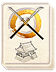

Requires
- Buildings:

- Arts: 
- Resources:
Enables
- Units:


Basic Building Statistics (can be modified by difficulty level, arts, skills, traits and retainers)
- Cost: 8000
- -1 to spear samurai recruitment times in this province
- +1 morale for all land units recruited in this province
If you are first to construct
- +2 to melee defence for all yari units
Description
When the soul is quiet, the spearpoint is steady.
This legendary school greatly increases the expertise and experience of spear-armed samurai units trained in this province. It also allows the recruitment of yari-armed hero units. An experienced unit of yari-armed samurai will always be present in the province to defend their famous school. Finally, if a clan constructs the first legendary sojutsu school in Japan all its yari-armed units receive a defensive bonus in battle. Arming troops with spears reached the height of its popularity during and after the Mongol invasions of Japan. The Mongols themselves made extensive use of spearmen, and the Japanese were not slow to adapt and copy this style of warfare. During the Sengoku Jidai, spears were issued to the thousands of ashigaru troops in clan armies, as it was relatively easy to drill ashigaru in simple spear tactics: they need only hold together, brace their spears, and then push the enemy back! The samurai, however, continued to use sojutsu, and the best samurai spearmen were indeed a force to be reckoned with: brave, skilled, and committed to victory or death under the code of bushido. The same could not always be said of the ashigaru.